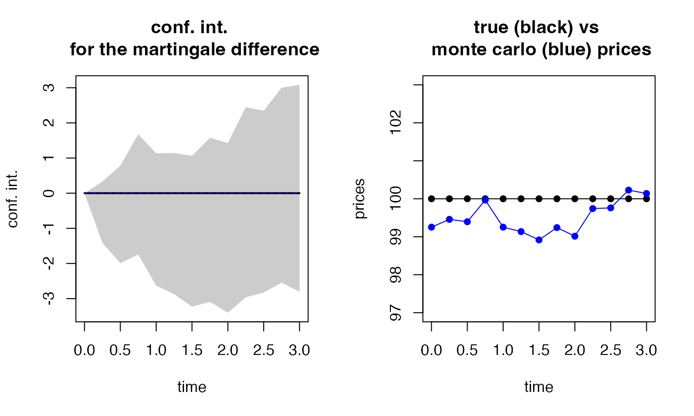
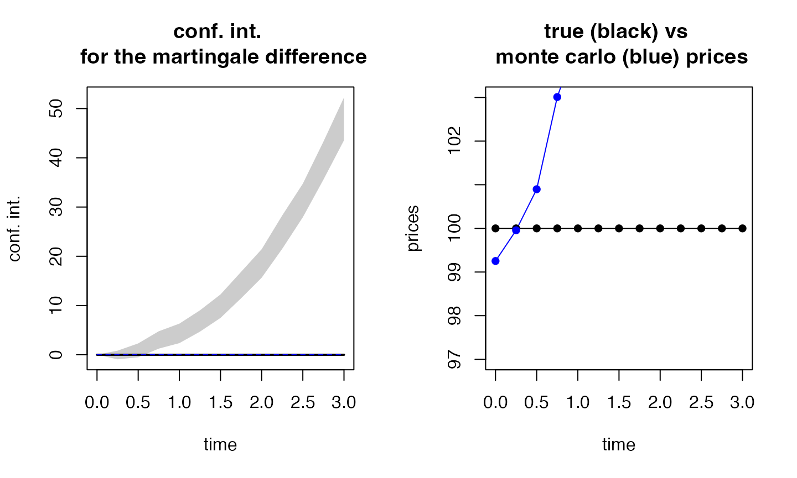

rm(list=ls()) # beware, removes everything in your environment
library(esgtoolkit)## Loading required package: ggplot2## Loading required package: gridExtra## Loading required package: reshape2## Loading required package: VineCopula## Loading required package: randtoolbox## Loading required package: rngWELL## This is randtoolbox. For an overview, type 'help("randtoolbox")'.##
##
## This is version 1.2.2 of esgtoolkit. Starting with 1.0.0, package renamed as: 'esgtoolkit' (lowercase)
##
##
r0 <- 0.03
S0 <- 100
set.seed(10)
eps0 <- esgtoolkit::simshocks(n = 100, horizon = 3, frequency = "quart")
eps_trend <- eps0 + 0.1 * seq_len(nrow(eps0))
sim.GBM <- esgtoolkit::simdiff(n = 100, horizon = 3, frequency = "quart",
model = "GBM",
x0 = S0, theta1 = r0, theta2 = 0.1,
eps = eps0, seed=10001)
sim.GBM_trend <- esgtoolkit::simdiff(n = 100, horizon = 3, frequency = "quart",
model = "GBM",
x0 = S0, theta1 = r0, theta2 = 0.1,
eps = eps_trend, seed=10001)
(test1 <- esgtoolkit::esgmartingaletest(r = r0, X = sim.GBM, p0 = S0,
alpha = 0.05, method = "trend"))## Registered S3 method overwritten by 'quantmod':
## method from
## as.zoo.data.frame zoo## $model
##
## Call:
## lm(formula = Y ~ X_past - 1)
##
## Coefficients:
## X_past1 X_past2 X_past3 X_past4 X_past5 X_past6 X_past7 X_past8
## -0.14911 0.16504 -0.25267 -0.20162 0.18199 -0.01611 0.15397 -0.12724
## X_past9 X_past10 X_past11 X_past12
## 0.03833 0.15083 -0.07937 -0.09135
##
##
## $confint
## 2.5 % 97.5 %
## X_past1 -1.6705836 1.37236886
## X_past2 -0.1841338 0.51422004
## X_past3 -0.5414766 0.03612904
## X_past4 -0.4916885 0.08844394
## X_past5 -0.1447822 0.50876978
## X_past6 -0.3226561 0.29042713
## X_past7 -0.1838445 0.49177573
## X_past8 -0.4451835 0.19070439
## X_past9 -0.2883042 0.36495517
## X_past10 -0.1648232 0.46648312
## X_past11 -0.4258725 0.26714026
## X_past12 -0.3295031 0.14679911
##
## $regression_summary
##
## Call:
## lm(formula = Y ~ X_past - 1)
##
## Residuals:
## Min 1Q Median 3Q Max
## -12.3141 -3.4157 0.1431 3.0048 13.7746
##
## Coefficients:
## Estimate Std. Error t value Pr(>|t|)
## X_past1 -0.14911 0.76560 -0.195 0.8460
## X_past2 0.16504 0.17571 0.939 0.3501
## X_past3 -0.25267 0.14532 -1.739 0.0856 .
## X_past4 -0.20162 0.14596 -1.381 0.1707
## X_past5 0.18199 0.16443 1.107 0.2714
## X_past6 -0.01611 0.15425 -0.104 0.9170
## X_past7 0.15397 0.16999 0.906 0.3675
## X_past8 -0.12724 0.15999 -0.795 0.4286
## X_past9 0.03833 0.16436 0.233 0.8162
## X_past10 0.15083 0.15884 0.950 0.3449
## X_past11 -0.07937 0.17436 -0.455 0.6501
## X_past12 -0.09135 0.11984 -0.762 0.4479
## ---
## Signif. codes: 0 '***' 0.001 '**' 0.01 '*' 0.05 '.' 0.1 ' ' 1
##
## Residual standard error: 5.43 on 88 degrees of freedom
## Multiple R-squared: 0.1238, Adjusted R-squared: 0.004291
## F-statistic: 1.036 on 12 and 88 DF, p-value: 0.424
##
##
## $F_statistic
## value
## 1.035915
##
## $F_critical_value
## [1] 1.86387
##
## $F_p_value
## value
## 0.4240198
##
## $ADF_p_value
## [1] 0.99
##
## $Ljung_Box_p_value
## [1] 0.5998307
(test2 <- esgtoolkit::esgmartingaletest(r = r0, X = sim.GBM_trend, p0 = S0,
alpha = 0.05, method = "trend"))## $model
##
## Call:
## lm(formula = Y ~ X_past - 1)
##
## Coefficients:
## X_past1 X_past2 X_past3 X_past4 X_past5 X_past6 X_past7
## -10.57510 0.24255 -0.36764 -0.28899 0.25569 -0.02208 0.20474
## X_past8 X_past9 X_past10 X_past11 X_past12
## -0.16338 0.04728 0.17789 -0.08904 -0.03516
##
##
## $confint
## 2.5 % 97.5 %
## X_past1 -16.1430911 -5.00710403
## X_past2 -0.2706056 0.75570513
## X_past3 -0.7878438 0.05256744
## X_past4 -0.7047516 0.12676931
## X_past5 -0.2034114 0.71479488
## X_past6 -0.4421226 0.39796047
## X_past7 -0.2444695 0.65394469
## X_past8 -0.5716269 0.24486928
## X_past9 -0.3556745 0.45023718
## X_past10 -0.1943914 0.55016698
## X_past11 -0.4777750 0.29969756
## X_past12 -0.2880419 0.21771320
##
## $regression_summary
##
## Call:
## lm(formula = Y ~ X_past - 1)
##
## Residuals:
## Min 1Q Median 3Q Max
## -18.1876 -5.0450 0.2114 4.4381 20.3448
##
## Coefficients:
## Estimate Std. Error t value Pr(>|t|)
## X_past1 -10.57510 2.80180 -3.774 0.000291 ***
## X_past2 0.24255 0.25822 0.939 0.350138
## X_past3 -0.36764 0.21145 -1.739 0.085588 .
## X_past4 -0.28899 0.20921 -1.381 0.170670
## X_past5 0.25569 0.23102 1.107 0.271398
## X_past6 -0.02208 0.21136 -0.104 0.917035
## X_past7 0.20474 0.22604 0.906 0.367537
## X_past8 -0.16338 0.20543 -0.795 0.428577
## X_past9 0.04728 0.20277 0.233 0.816162
## X_past10 0.17789 0.18733 0.950 0.344919
## X_past11 -0.08904 0.19561 -0.455 0.650099
## X_past12 -0.03516 0.12725 -0.276 0.782930
## ---
## Signif. codes: 0 '***' 0.001 '**' 0.01 '*' 0.05 '.' 0.1 ' ' 1
##
## Residual standard error: 8.021 on 88 degrees of freedom
## Multiple R-squared: 0.5881, Adjusted R-squared: 0.532
## F-statistic: 10.47 on 12 and 88 DF, p-value: 1.63e-12
##
##
## $F_statistic
## value
## 10.47123
##
## $F_critical_value
## [1] 1.86387
##
## $F_p_value
## value
## 1.629597e-12
##
## $ADF_p_value
## [1] 0.99
##
## $Ljung_Box_p_value
## [1] 0.5998307
(test1_ratio <- esgtoolkit::esgmartingaletest(r = r0, X = sim.GBM, p0 = S0,
alpha = 0.05, method = "ratio"))##
## One Sample t-test
##
## data: -log(Dt/Y)
## t = 3.6212, df = 1299, p-value = 0.0003045
## alternative hypothesis: true mean is not equal to 0
## 95 percent confidence interval:
## 0.004930759 0.016589169
## sample estimates:
## mean of x
## 0.01075996
(test2_ratio <- esgtoolkit::esgmartingaletest(r = r0, X = sim.GBM_trend, p0 = S0,
alpha = 0.05, method = "ratio"))##
## One Sample t-test
##
## data: -log(Dt/Y)
## t = -28.306, df = 1299, p-value < 2.2e-16
## alternative hypothesis: true mean is not equal to 0
## 95 percent confidence interval:
## -0.1381972 -0.1202828
## sample estimates:
## mean of x
## -0.12924
(test3 <- esgtoolkit::esgmartingaletest(r = r0, X = sim.GBM, p0 = S0,
alpha = 0.05))##
## martingale '1=1' one Sample t-test
##
## alternative hypothesis: true mean of the martingale difference is not equal to 0
##
## df = 99
## t p-value
## 0 Q2 -1.23133508 0.2211146
## 0 Q3 -0.86706246 0.3880045
## 0 Q4 -0.03979258 0.9683386
## 1 Q1 -0.78853728 0.4322667
## 1 Q2 -0.85421446 0.3950485
## 1 Q3 -1.00243504 0.3185774
## 1 Q4 -0.64526489 0.5202482
## 2 Q1 -0.81032744 0.4196956
## 2 Q2 -0.18944936 0.8501285
## 2 Q3 -0.18407588 0.8543305
## 2 Q4 0.16306302 0.8708012
## 3 Q1 0.09358936 0.9256245
##
## 95 percent confidence intervals for the mean :
## c.i lower bound c.i upper bound
## 0 Q1 0.000000 0.0000000
## 0 Q2 -1.415461 0.3314127
## 0 Q3 -1.990430 0.7798667
## 0 Q4 -1.744826 1.6762189
## 1 Q1 -2.629092 1.1337289
## 1 Q2 -2.872560 1.1435895
## 1 Q3 -3.227314 1.0608930
## 1 Q4 -3.092177 1.5745601
## 2 Q1 -3.400502 1.4284311
## 2 Q2 -2.961712 2.4454467
## 2 Q3 -2.826997 2.3470049
## 2 Q4 -2.545313 3.0011186
## 3 Q1 -2.804901 3.0825960## $t
## Qtr1 Qtr2 Qtr3 Qtr4
## 0 -1.23133508 -0.86706246 -0.03979258
## 1 -0.78853728 -0.85421446 -1.00243504 -0.64526489
## 2 -0.81032744 -0.18944936 -0.18407588 0.16306302
## 3 0.09358936
##
## $p.value
## Qtr1 Qtr2 Qtr3 Qtr4
## 0 0.2211146 0.3880045 0.9683386
## 1 0.4322667 0.3950485 0.3185774 0.5202482
## 2 0.4196956 0.8501285 0.8543305 0.8708012
## 3 0.9256245
##
## $samplemean
## Qtr1 Qtr2 Qtr3 Qtr4
## 0 -0.54202403 -0.60528170 -0.03430376
## 1 -0.74768145 -0.86448540 -1.08321039 -0.75880860
## 2 -0.98603566 -0.25813277 -0.23999618 0.22790296
## 3 0.13884749
##
## $conf.int
## Series 1 Series 2
## 0 Q1 0.000000 0.0000000
## 0 Q2 -1.415461 0.3314127
## 0 Q3 -1.990430 0.7798667
## 0 Q4 -1.744826 1.6762189
## 1 Q1 -2.629092 1.1337289
## 1 Q2 -2.872560 1.1435895
## 1 Q3 -3.227314 1.0608930
## 1 Q4 -3.092177 1.5745601
## 2 Q1 -3.400502 1.4284311
## 2 Q2 -2.961712 2.4454467
## 2 Q3 -2.826997 2.3470049
## 2 Q4 -2.545313 3.0011186
## 3 Q1 -2.804901 3.0825960
##
## $truemean
## [1] 0 0 0 0 0 0 0 0 0 0 0 0 0
##
## $true_prices
## [1] 100 100 100 100 100 100 100 100 100 100 100 100 100
##
## $mc.prices
## [1] 99.25281 99.45798 99.39472 99.96570 99.25232 99.13551 98.91679
## [8] 99.24119 99.01396 99.74187 99.76000 100.22790 100.13885
esgplotbands(test3) 
(test4 <- esgtoolkit::esgmartingaletest(r = r0, X = sim.GBM_trend, p0 = S0,
alpha = 0.05))##
## martingale '1=1' one Sample t-test
##
## alternative hypothesis: true mean of the martingale difference is not equal to 0
##
## df = 99
## t p-value
## 0 Q2 -0.09830242 9.218909e-01
## 0 Q3 1.26564339 2.086113e-01
## 0 Q4 3.38854397 1.009793e-03
## 1 Q1 4.35501911 3.248801e-05
## 1 Q2 6.28558899 8.832209e-09
## 1 Q3 8.22182946 8.017342e-13
## 1 Q4 10.46406421 1.065632e-17
## 2 Q1 12.72722237 1.464574e-22
## 2 Q2 14.59789208 1.997160e-26
## 2 Q3 18.25662272 1.864629e-33
## 2 Q4 20.27387917 5.091006e-37
## 3 Q1 21.86138734 1.126498e-39
##
## 95 percent confidence intervals for the mean :
## c.i lower bound c.i upper bound
## 0 Q1 0.0000000 0.000000
## 0 Q2 -0.9213037 0.834326
## 0 Q3 -0.5092052 2.302959
## 0 Q4 1.2474891 4.772721
## 1 Q1 2.3632214 6.318966
## 1 Q2 4.6921279 9.021072
## 1 Q3 7.4864493 12.249406
## 1 Q4 11.4705294 16.838555
## 2 Q1 15.6505958 21.431879
## 2 Q2 21.5232520 28.294760
## 2 Q3 27.9312389 34.742971
## 2 Q4 35.5563641 43.271273
## 3 Q1 43.5552945 52.251014## $t
## Qtr1 Qtr2 Qtr3 Qtr4
## 0 -0.09830242 1.26564339 3.38854397
## 1 4.35501911 6.28558899 8.22182946 10.46406421
## 2 12.72722237 14.59789208 18.25662272 20.27387917
## 3 21.86138734
##
## $p.value
## Qtr1 Qtr2 Qtr3 Qtr4
## 0 9.218909e-01 2.086113e-01 1.009793e-03
## 1 3.248801e-05 8.832209e-09 8.017342e-13 1.065632e-17
## 2 1.464574e-22 1.997160e-26 1.864629e-33 5.091006e-37
## 3 1.126498e-39
##
## $samplemean
## Qtr1 Qtr2 Qtr3 Qtr4
## 0 -0.04348885 0.89687710 3.01010493
## 1 4.34109374 6.85659997 9.86792776 14.15454224
## 2 18.54123730 24.90900609 31.33710516 39.41381860
## 3 47.90315446
##
## $conf.int
## Series 1 Series 2
## 0 Q1 0.0000000 0.000000
## 0 Q2 -0.9213037 0.834326
## 0 Q3 -0.5092052 2.302959
## 0 Q4 1.2474891 4.772721
## 1 Q1 2.3632214 6.318966
## 1 Q2 4.6921279 9.021072
## 1 Q3 7.4864493 12.249406
## 1 Q4 11.4705294 16.838555
## 2 Q1 15.6505958 21.431879
## 2 Q2 21.5232520 28.294760
## 2 Q3 27.9312389 34.742971
## 2 Q4 35.5563641 43.271273
## 3 Q1 43.5552945 52.251014
##
## $truemean
## [1] 0 0 0 0 0 0 0 0 0 0 0 0 0
##
## $true_prices
## [1] 100 100 100 100 100 100 100 100 100 100 100 100 100
##
## $mc.prices
## [1] 99.25281 99.95651 100.89688 103.01010 104.34109 106.85660 109.86793
## [8] 114.15454 118.54124 124.90901 131.33711 139.41382 147.90315
esgplotbands(test4) 